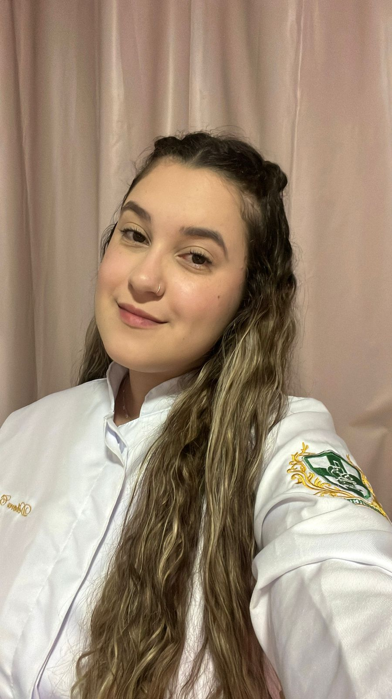
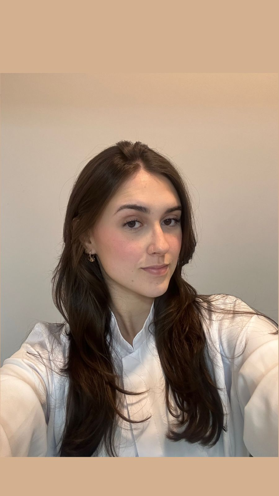

Quem Somos Nós...
Nicolle Ventura
RA 302311167
Eloiza Carolina Perin
RA: 302310624
Anna Cecília Baer
RA: 302310329

Débora Camile Oliveira
RA: 302310421

Marina Pacheco Chidichima
RA: 302220239
Gabriella Belo
RA: 302311171

Bianca Fachinelli
RA: 302311172